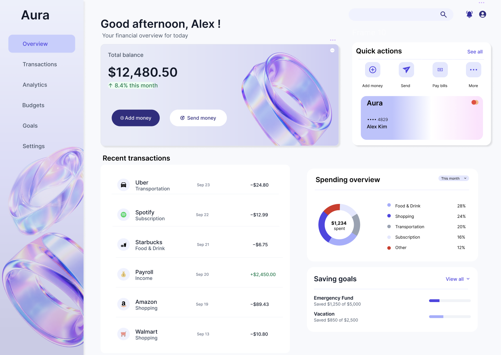
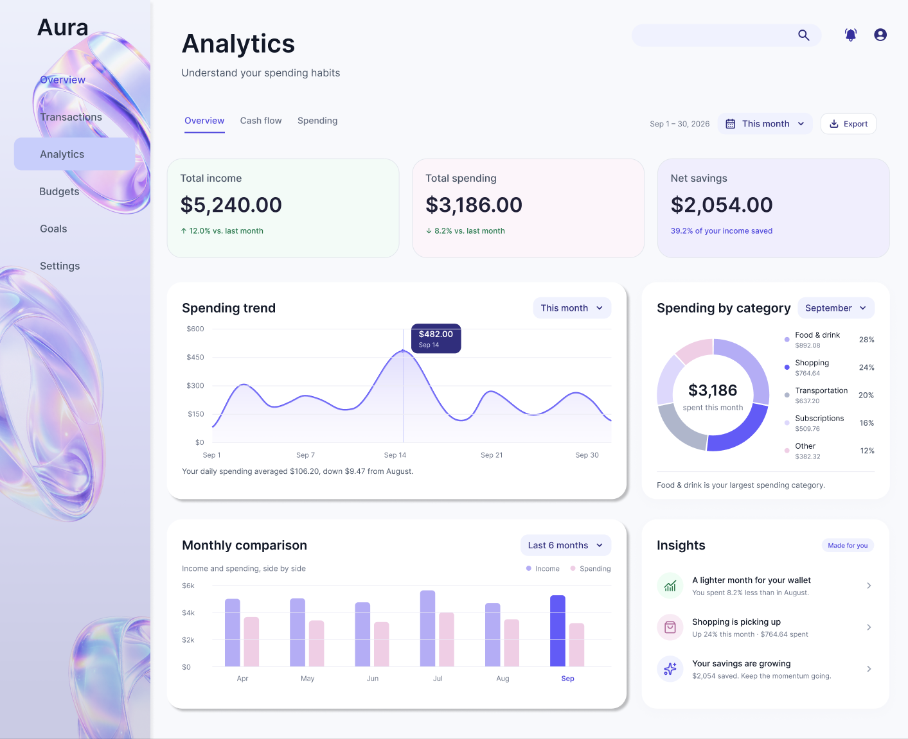
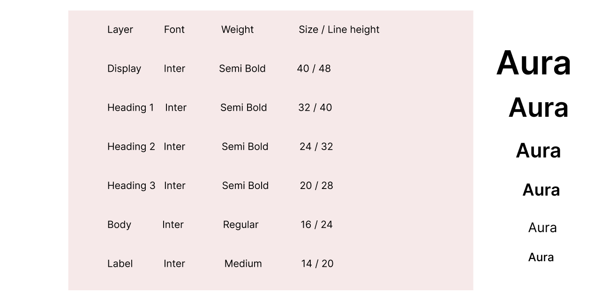
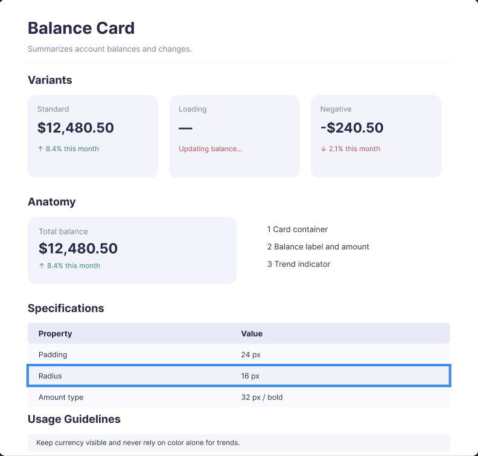
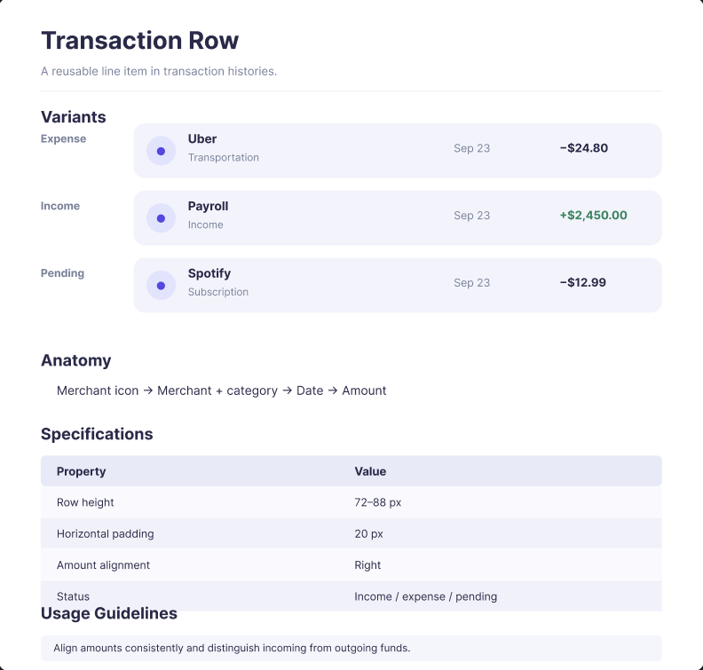
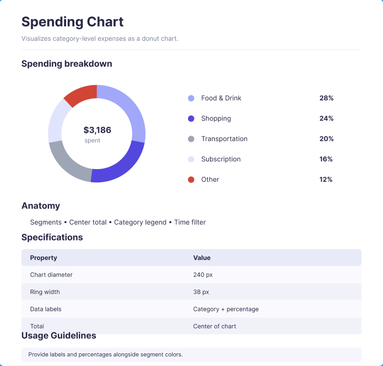

Start with the
essentials.
A restrained palette and readable hierarchy help financial information stand out without adding noise.
Color palette
Representative colors sampled visually from Aura; confirm exact tokens against the Figma Foundations page before publishing as a technical specification.
Typography hierarchy
Spacing rhythm
Consistent intervals keep dense financial layouts comfortable to scan.
Suggested 4px-based spacing scale · rounded cards · generous white space
One language.
Many moments.
Explore representative states for the core components used throughout the Aura experience.
Buttons / Action hierarchy
Primary for key actions. Secondary for alternative paths. Disabled only when action cannot proceed.
Interaction states
| Default | Deep violet |
| Hover | Bright violet + lift |
| Disabled | Muted gray |
| Shape | Pill |
Input / Search & forms
Click the field to see the focus treatment.
Behavior
Labels remain visible, focus states are distinct, and financial amounts stay legible.
Balance card / Summary
Hierarchy
Label → balance → trend. Important values receive the most visual emphasis.
Transaction row / Reusable pattern
Information anatomy
Merchant, category, date and signed amount support fast scanning.
Savings goal / Progress
$1,250 of $5,000 saved
Vacation
$850 of $2,500 saved
Progressive disclosure
Show goal name, amount and completion together; never rely on color alone.
Numbers, made
understandable.
Charts pair color with labels and percentages to help users understand where their money goes.
Spending breakdown
Chart principles
Direct labels, consistent category order, readable percentages and a clear total.
Keep the color palette stable across Dashboard and Analytics.
From system
to screen.
Real Aura interface screens show how these elements come together in a coherent product experience.
Dashboard / Overview

Analytics / Overview

Concept design and examples by Mie Duong. The component previews on this page are HTML illustrations of the system, not exported Figma component instances.
Designed.
Documented.
Selected documentation directly from the Aura Figma project, including visual hierarchy, reusable components, specifications and usage guidance.




Documentation images are taken from the Figma screenshots provided by the designer. Measurements shown describe the documented components and should be checked against the latest Figma source before development handoff.